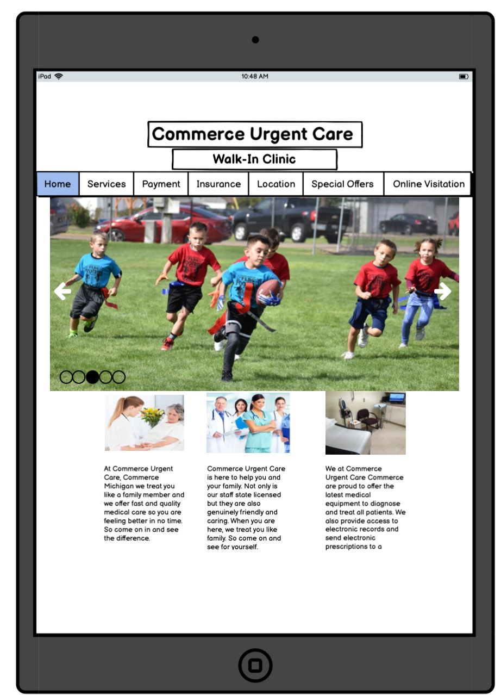
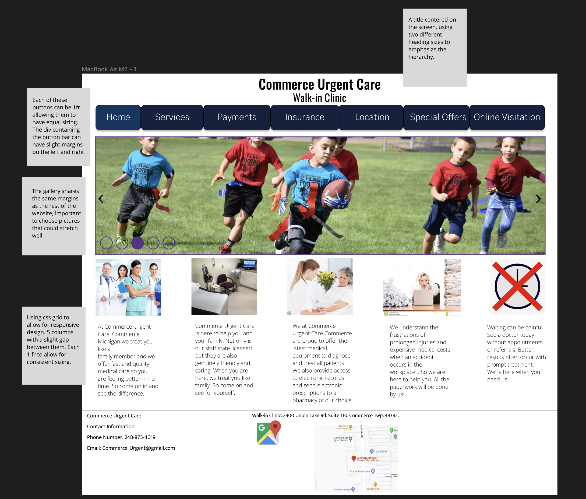

The website I chose to do was one for an urgent care clinic near where I call home. When I initally viewed the website I was assailed with a variety
of problems. If you click on the screenshot you'll be able to investigate the website for yourself.
When it comes to the usability of the website there are a few problems
- Due to certain placement of items, and a main gallery that doesn't actually ever change information. It lowers efficiency due to emphasis on things that don't change
- There is no acknowledgment of dates for various deals, making it hard to trust them
- Identifying what is a link and what isn't is difficult
- The colors make it difficult to distinguish the visual hierarchy of the page
- Due to the design being rather unique, it's difficult to reacclimate after a long time of using it; an overload of information
When I began to take a deeper look through identifying the accessibility problems with the help of WebAIM Wave, it was identified to have a variety of errors and warnings
Many of the errors highlighted the fact that the images generally lacked any alternative text, which would make it quite difficult to parse the page for anyone with
a visual impairment. Furthermore there are a multitude of contrast issues that make it difficult to parse the information in an easy way. The low visual fidelity makes
it tough to clearly follow the important aspects of the website, as everything seems to scream for the users attention. Beyond that there were a few other warnings
highlighted such as the amount of underlines being used and the lack of page sections throughout.
Below you will find the visual guide I used as the basis for my lofi, alongside with the lofi and hifi designs (with some annotations to go with them)


With that all being said, click here to see the redesign in full!
Due to not completely understanding javascript yet, the complete gallery would be an addition for later